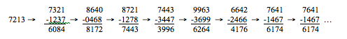

SIENA COLLEGE
28th Annual High School Programming Contest
March 27, 2015
Problem #4: Four-Digit Number Cycler
Background Information: A very popular game is Four-Digit Number Cycler. In this game your opponent gives you a four-digit number (with at least two different digits) and you give your opponent a four-digit number (with at least two different digits). The first player to compute the number of cycles until repetition for his/her number is the winner. Cycles are described in the next paragraph. The game is mostly fair because every four-digit number (with at least two different digits) will reach a cycle of length one.
CYCLES: Start with any four-digit number in which at least two of the digits are different. Put the digits in descending order to make one new four-digit number. Put the digits in ascending order to make a second new four-digit number. Include leading zeros if necessary. Subtract the second number from the first to form a new number. Apply the process until the new number is the same as the previous one.
For example, if your starting number is 7213, the following computations are executed:

In this example, eight subtractions were required to find a cycle of length one.
From the above example it can be observed if your starting number is 7641 (or any permutation of the digits 7641) then the number subtractions needed (to determine a cycle of length one) is 2.
If you start with a four-digit number that does not have at least two different digits then the number of necessary subtractions will be 2.
Programming Problem:
- Input: A four digit positive 4-digit integer.
- Output: The input value and the number of subtractions needed to find the cycle of length one.
- Example 1:
- Input: 7213
- Output: 7213 8
- Example 2:
- Input: 7215
- Output: 7215 4
- Example 3:
- Input: 3333
- Output: 3333 2